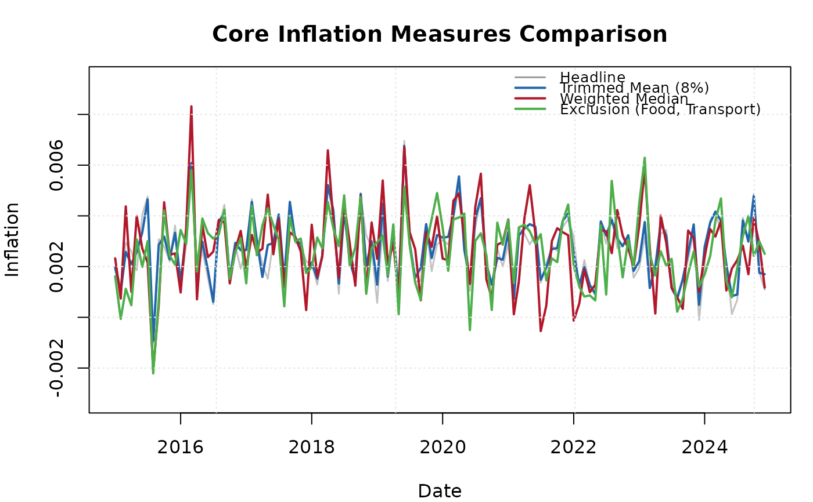

Takes multiple ik_core objects and facilitates side-by-side comparison.
Produces summary statistics and a multi-line chart of all measures.
Arguments
- ...
One or more objects of class
"ik_core", as returned byik_core().- labels
Character vector or
NULL. Labels for each measure. IfNULL, labels are derived from each object's method name.
Value
An S3 object of class "ik_comparison" with elements:
- measures
List of
ik_coreobjects.- labels
Character vector of labels.
Examples
data <- ik_sample_data("components")
core_tm <- ik_core(data, method = "trimmed_mean")
core_wm <- ik_core(data, method = "weighted_median")
core_ex <- ik_core(data, method = "exclusion", exclude = c("Food", "Transport"))
comp <- ik_compare(core_tm, core_wm, core_ex)
print(comp)
#>
#> ── Core Inflation Comparison ───────────────────────────────────────────────────
#>
#> ── Summary Statistics ──
#>
#> • Trimmed Mean (8%): mean = 0.27%, SD = 0.00127
#> • Weighted Median: mean = 0.27%, SD = 0.00159
#> • Exclusion (Food, Transport): mean = 0.26%, SD = 0.0014
#> • Headline: mean = 0.26%
plot(comp)
